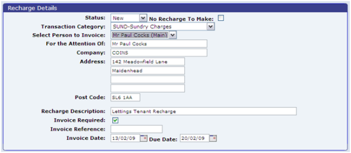
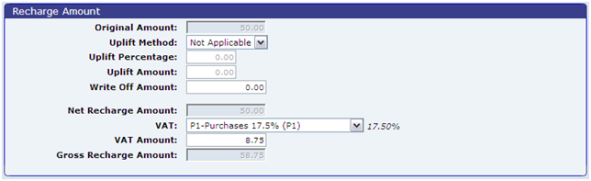

New recharges that have come from financials can be reviewed using the Review Recharges workbench:
A recharge has one of the following statuses in the recharge workbench:
From the recharge workbench you can update the recharge, and enter details of who is to be recharged and the amount. The “Recharge Details” section allows you specify the transaction category to be invoiced and to enter details of who is to be recharged:

You can also specify whether an invoice should be generated for the recharge. This is then produced using the Print Invoices option (see Printing Invoices). The you can also update the status from this section.
The “Recharge Amount” section allows you to specify the amount to be recharged along with details of the
